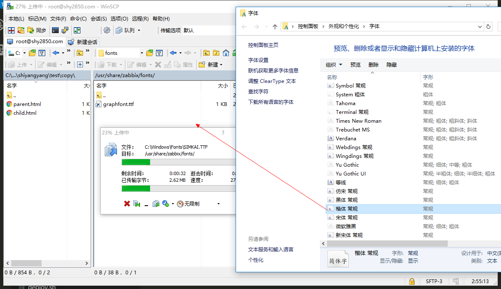
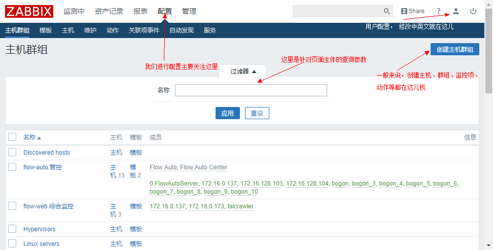

Zabbix 是什么
介绍 zabbix 在自动化运维中的应用场景
2017/11/25
Zabbix 是什么
运维监控 的初衷就是当某些指标不符合我们预期的时候，我们能够在第一时间发现异常以便尽快处理。
所以运维监控工具的一个核心功能应该是: 定期收集被监测主体的各项指标数据、定义合理指标范围 并对异常情况进行后续操作
Zabbix就是这样的工具
Zabbix 有什么
监控项: 定义监控基本单位，包括开启状态、指标数值、日志、名称标识等
- 定义监控项键值
- 监控项获取间隔
- 历史记录
- 来源类型
- 关联触发器
图形-聚合图形
- 图形：根据数值型监控项的历史记录，创建数据图表
- 聚合图形： 几个图形的聚合布局模块
触发器: 通过定义监控项的合理指标范围, 定时检测监控项触发
可配置告警
- 告警用户
- 告警媒介类型
自动发现
- 主机自动发现配置
- 监控项发现配置
主机-主机群组
- 一台主机包括：监控项、图形、触发器、监控项自动发现等
- 主机群组就是一系列主机的分组
模板-应用集
- 模板： 针对一个主机的一系列 监控项、图形、触发器、自动发现等配置的模型
- 应用集： 一个模板内监控项的分组
Zabbix 安装
https://www.zabbix.com/documentation/3.4/zh/manual/installation/install_from_packages
官网文档中 RHEL/CentOS rpm安装包路径错误
# rpm -ivh http://repo.zabbix.com/zabbix/3.4/rhel/7/x86_64/zabbix-release-3.4-1.el7.noarch.rpm可改为
# rpm -ivh http://repo.zabbix.com/zabbix/3.4/rhel/7/x86_64/zabbix-release-3.4-2.el7.noarch.rpm
一些配置修改： (ubuntu 14)
- Apache2 配置文件位置
/etc/apache2 - php5 配置
/etc/php5/apache2/php.ini找到date.timezone设置为Asia/Shanghai - web国际化支持 需要系统安装语言
apt-get install language-pack-zh-hans - 字体文件导入， 从windows字体文件夹scp 到 server目录, 文件名修改为全小写 
在服务中配置字体
/usr/share/zabbix/include/defines.inc.php中 替换graphfont - 【配置修改均需要重启Apache】
service apache2 restart
WEB 页面简单介绍 （针对 v3.4）
